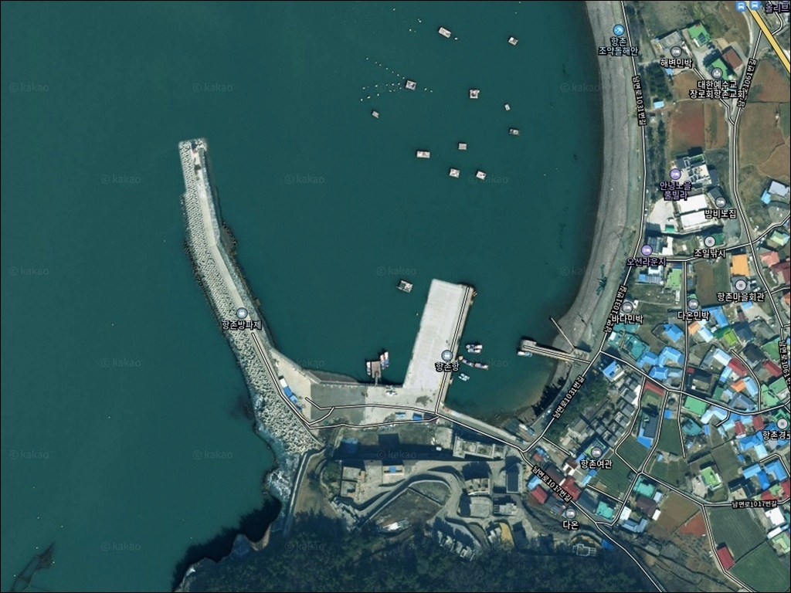
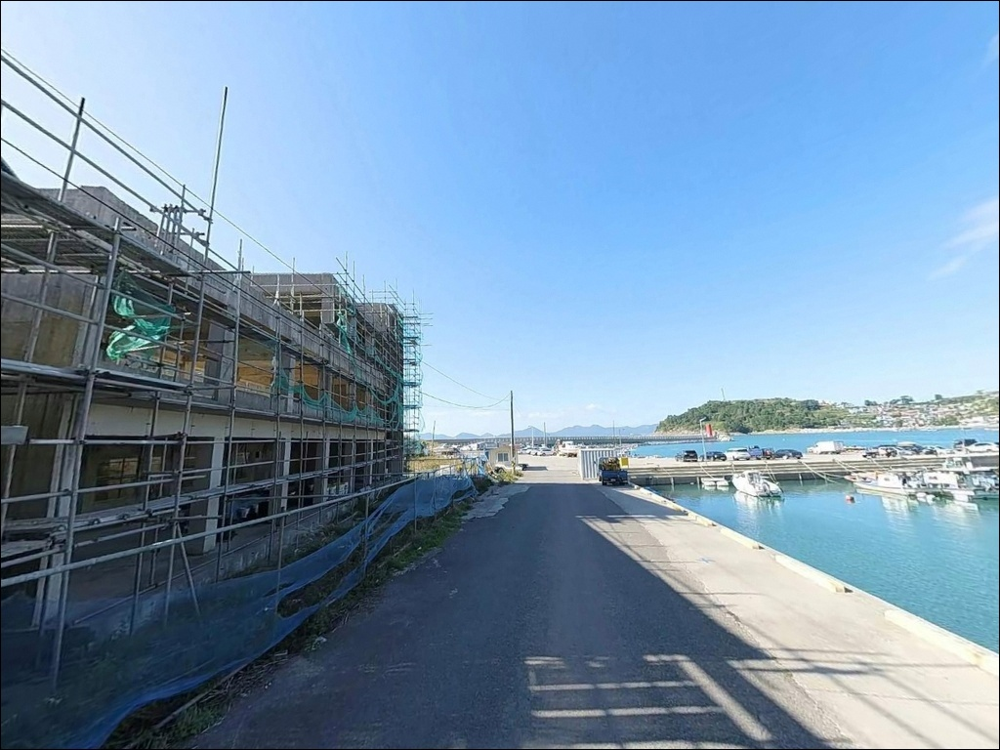
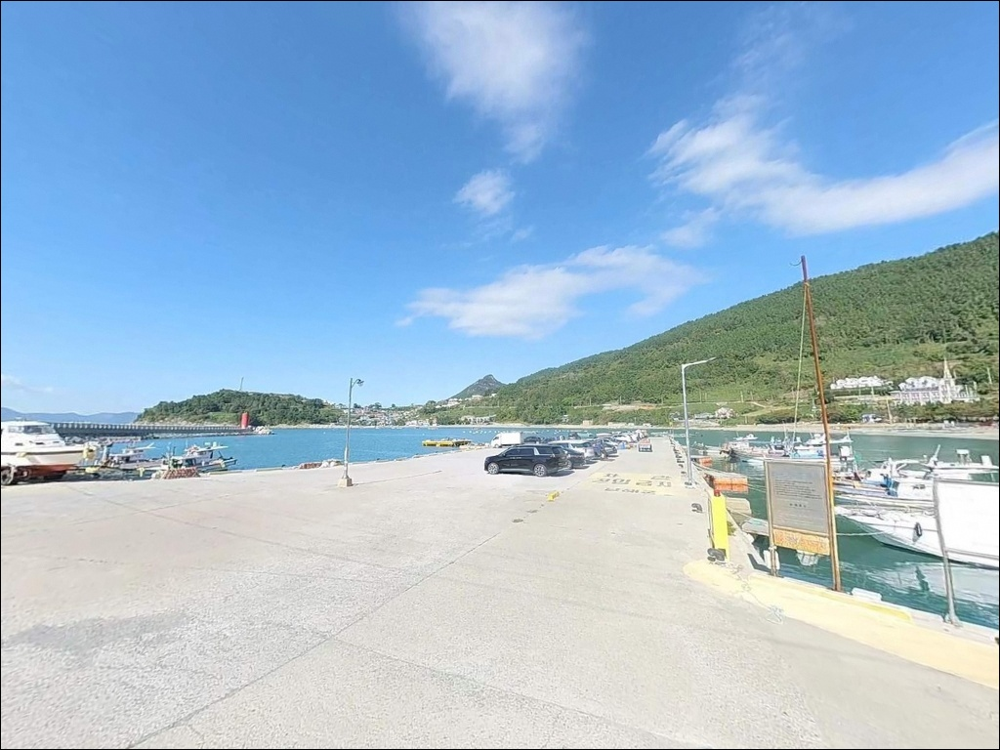
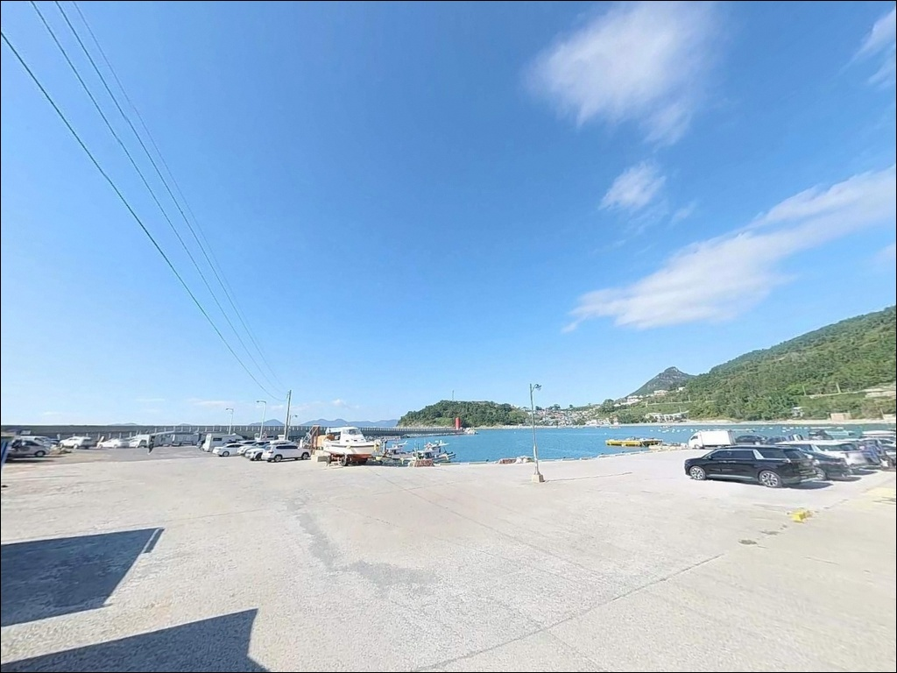
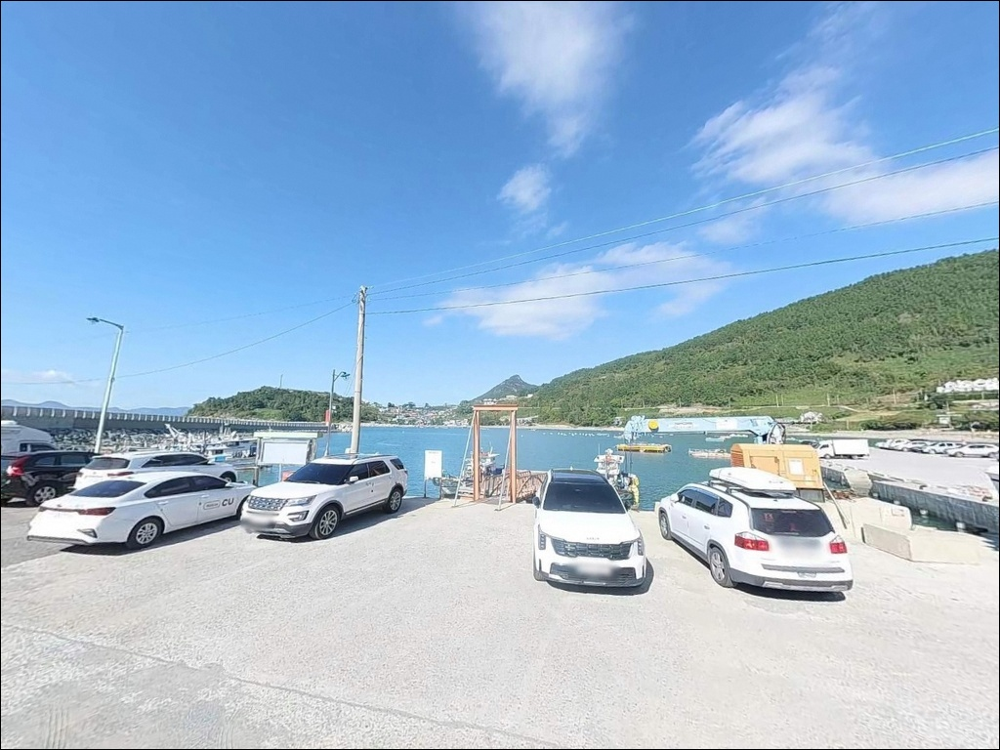
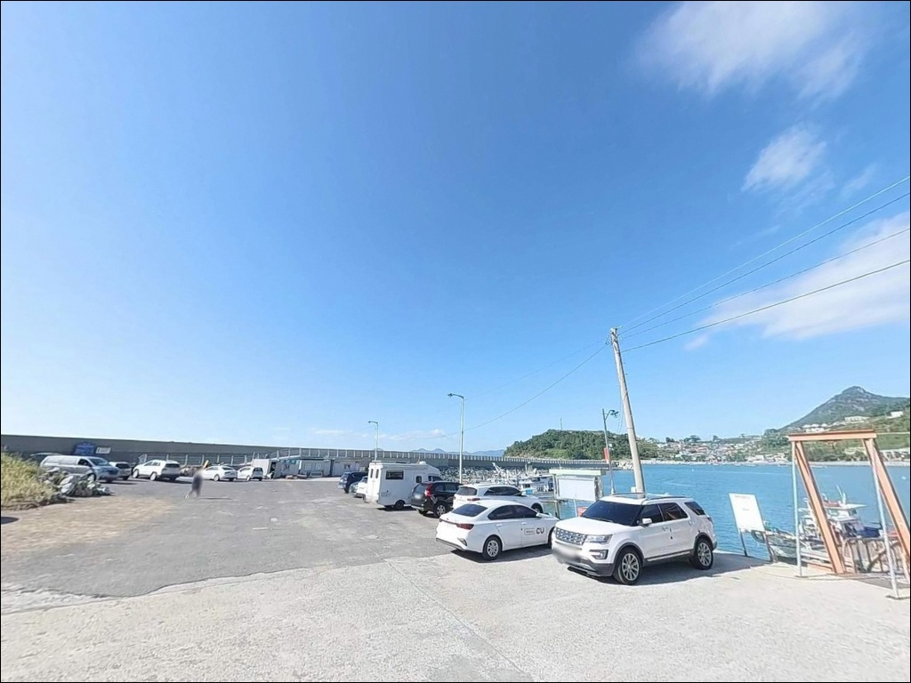
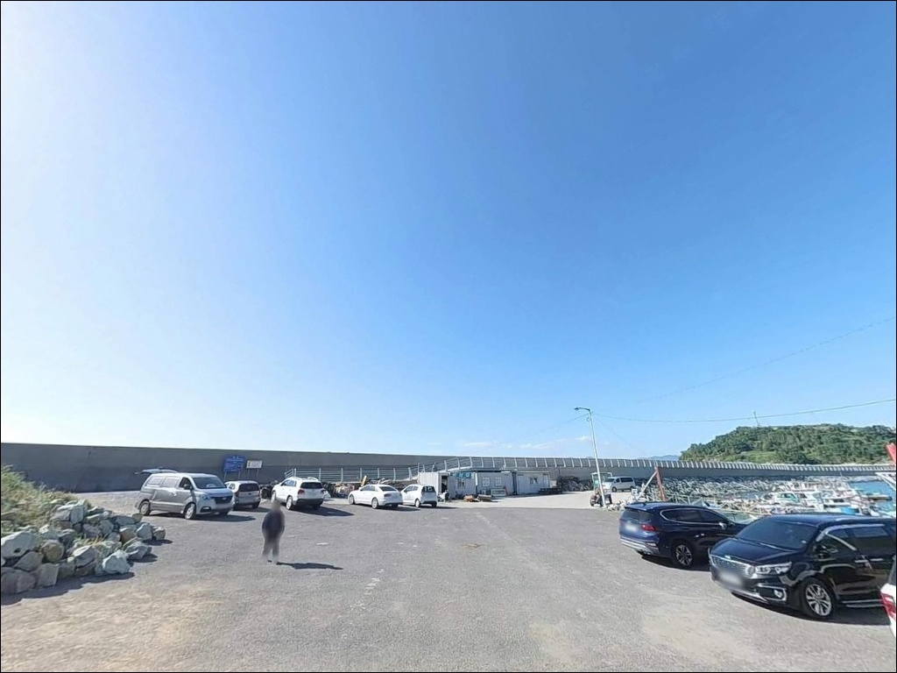
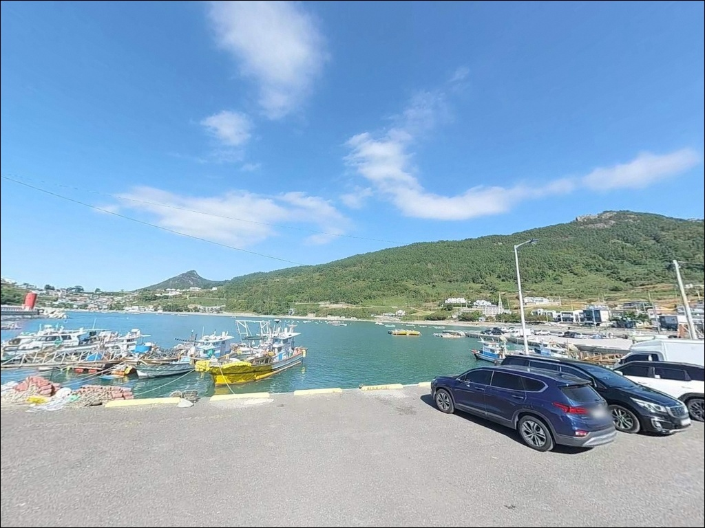
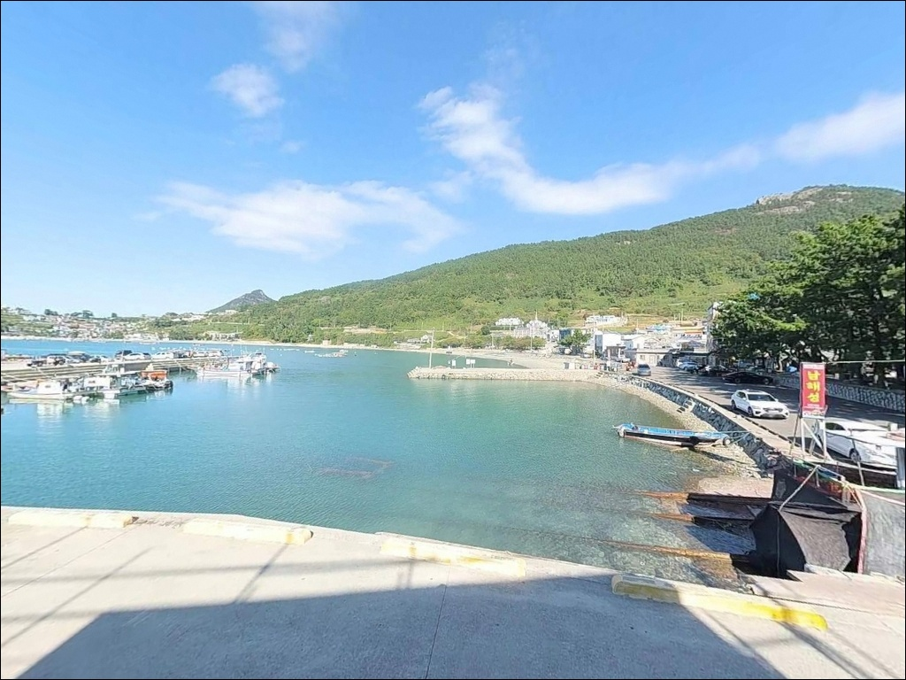

남해 항촌항 방파제, 조금 물때 낙조 조류에 반응하는 감성돔 찌낚시
이 페이지에는 광고(제휴 링크 포함)가 있으며, 광고 링크를 통해 구매하면 운영자가 판매 수익 또는 수수료를 받을 수 있습니다. 포인트 사진: 카카오맵 스카이뷰·로드뷰. 이 페이지의 지도·사진 이미지는 카카오맵의 실제 서비스 이미지와 다를 수 있습니다.


포인트 안내
항촌항 (항촌방파제)
경남 남해군 남면 선구리 629-2
낙조 때 방파제 외항 방향으로 조류가 집중되는 구조를
파악하지 않고 입장하면,
자리를 잡아도 채비 흘림 방향이 엇나가
찌낚시와 에깅 모두 효율이 급격히 떨어집니다.
조류 방향과 물때를 먼저 계산하는 것이
항촌항 공략의 출발점입니다.
항촌항은 경남 남해군 남면 선구리 해안에 조성된
지방어항으로, 방파제 220m와 물양장 165m를 갖추고 있습니다.
외항은 여수만 방향으로 열린 구조라
조류 소통이 빠르고 수심이 일정하게 유지되며,
암반 저질과 수중 여가 잘 발달한
방파제 낚시 포인트입니다.
이 글은 항촌항의
진입 동선, 차박 여건, 물때 판단 기준,
낚시 스타일별 공략 조건에 집중합니다.
조황 단정이나 특정 어종 보장은
이 글의 범위에 포함되지 않습니다.

1. 진입 동선과 포인트 접근성
항촌항은 남해 남면 해안도로를 따라
항촌마을로 진입한 뒤 포구 앞까지
포장도로가 연결되어 있습니다.
도로 전 구간이 포장된 상태이며,
남면 해안선 특성상 굽어 있고
경사 구간이 일부 포함된 왕복 1차로
수준의 해안 마을도로입니다.
대형 SUV나 캠핑 장비를 갖춘 차량도
진입 자체에 큰 어려움은 없는 편이나,
좁은 굽이 구간에서 교행이 어려울 수 있어
초행이라면 위성지도로 진입로를
미리 확인하고 가는 것이 좋습니다.
선착장 앞 넓은 콘크리트 부지에서
회차가 가능합니다.
주차는 방파제 시작 지점과
선착장 내항 쪽 공터를 활용하는 방식으로,
약 15대 내외 수용이 가능한 수준입니다.
낚시 자리와 주차 구역이 인접해
장비 이동 동선이 짧은 편입니다.

2. 차박 환경과 야간 체류 여건
항촌항은 항촌마을 바로 앞에 붙어 있는
포구형 어항입니다.
야간에는 차량 통행이 크게 줄고
어촌 마을 특유의 정숙한 분위기가 유지되는 편이나,
민가가 항 주변을 둘러싼 구조라
완전히 외딴 포인트와는 다른 환경입니다.
가로등은 방파제 주변에 설치되어 있으나
외항 쪽은 어두운 편입니다.
산과 바다로 둘러싸인 지형 특성상
소음원이 거의 없어 야간 낚시 환경은 조용합니다.
외항 방향은 너울성 파도가 들어올 수 있어
기상 악화 시 방파제 끝단 접근을
삼가는 판단이 필요합니다.
차박 용도로는 방파제 옆 공터를 활용하는
단기 대기형이 현실적입니다.
공간이 넓지 않아 동시 수용에 한계가 있으며,
어선 조업 동선을 막지 않는 자리 선정이
기본 매너입니다.


3. 주변 편의시설 및 인프라 현황
항촌항 반경 3km 이내에는
대형 편의점이나 주유소를 기대하기 어렵습니다.
마을 내 소형 매점이 있으나
운영 시간이 짧은 편이라,
완전 자급 체제로 진입하는 것이
현실적인 준비 방식입니다.
식수, 얼음, 낚시 소품은 출발 전에 갖춰야 합니다.
차량으로 이동하면 남면 소재지 방향의
마트와 기본 편의 인프라를 활용할 수 있습니다.
응급 상황 발생 시 남해읍까지
약 15~20km 거리이므로,
비상약품과 연료는 출발 전 완비하는 것이
기본입니다.

4. 진입 전 반드시 챙겨야 할 준비사항
항촌항 방문 전에 먼저 확인할 것은
물때와 조류 방향입니다.
여수만 수로와 인접한 이 해역은
낙조 시 조류 흐름이 방파제 외항 방향으로 형성되며,
조금 전후 구간에서 어종 활성도가
가장 높아지는 구조입니다.
바다타임에서 남해 남면 기준 물때를 확인하고
조금 전후 낙조 타이밍을 노려
입장 시각을 맞추는 것이 기본 전략입니다.
섬 지역 특성상 기상 변화가 빠르므로
당일 아침 기상청 예보를 다시 한번 확인합니다.
외해 노출형 구조라 너울성 파도가
방파제를 넘을 수 있으며,
암반 저질에서의 채비 손실이 잦으니
여분 채비는 넉넉히 준비하는 편이 좋습니다.
항촌항 인근 해역은 선박 조업이 활발한 수역이므로
어선 이동 동선과 어구에 접촉하지 않도록
자리를 잡는 것이 기본 매너입니다.
야간에는 헤드랜턴과 구명조끼를 반드시 착용하고,
테트라포트 구간 이동 시에는
전용 신발 착용이 필수입니다.

5. 외항 조류가 살아날 때 달라지는 지형 여건
항촌항의 핵심은 방파제 외항과
여수만 수로가 만나는 지점에 형성되는
조류 흐름입니다.
만조 기준 수심 10m 이상이 확보되는
외항 끝단 구간은 암반 저질 위에
수중 여가 고루 발달해 있어
어종의 은신처와 먹이 활동 구간이
자연스럽게 갖춰진 구조입니다.
방파제 외항 쪽 테트라포트 구간은
조류가 형성될 때 흘림 공략이 가능한
핵심 자리가 됩니다.
사리 전후에는 조류가 강하게 흘러
채비 컨트롤이 어려워지는 구간도 있어,
조금 전후 타이밍에 집중하는 것이
이 포인트를 제대로 공략하는 방법입니다.
내항 쪽은 수심이 완만하고 조류가 정체된 구조라
찌낚시보다는 야간 볼락 탐색에 어울립니다.
방파제와 연결된 인근 갯바위 구간도
도보 10~20분 거리로 연결되며,
해안선을 따라 암반 낚시 자원이 넓게 분포합니다.
최신 조황은 출조 전에 꼭 검색해 보시기 바랍니다.


6. 포인트에 어울리는 낚시 스타일
이 포인트에서 가장 잘 맞는 낚시는
감성돔·벵에돔을 노리는 찌낚시입니다.
암반 저질과 수중 여 지형, 외항 방향의
조류 흐름은 릴찌·반유동·전유동 모두
충분히 힘을 발휘할 수 있는 구조 조건입니다.
가을부터 영등철까지 대물 감성돔의
회유가 잦은 해역으로 알려져 있습니다.
에깅도 이 포인트에 잘 맞는 스타일입니다.
남해 남면 일대는 무늬오징어·갑오징어
에깅 포인트로 알려진 권역이며,
항촌 인근 해역도 동일 패턴이 적용됩니다.
갑오징어는 다운샷 스테 채비,
무늬오징어는 에기 원투 후 저킹 방식이
방파제 콧부리 구간 공략에 유효합니다.
볼락 라이트게임은 야간 내항 쪽을 노리는 방식으로
시도해 볼 수 있습니다.
방파제 내항 석축과 테트라포트 경계면에서
소형 지그헤드 채비로 천천히 탐색하면
볼락 마릿수를 기대해 볼 수 있는 지형입니다.
원투낚시는 외항 방향 수심 변화 구간을 노려
붕장어 계열 탐색이 가능한 스타일입니다.

7. 대안 포인트와 플랜 B 동선
항촌항 외항이 포화 상태이거나
조류가 너무 강해 채비 컨트롤이 어려울 때는
향촌방파제가 첫 번째 대안입니다.
항촌항에서 약 700m 거리로,
동일 해역의 암반 저질과 비슷한 수심 구조를
갖추고 있어 즉시 이동이 가능한 예비 자리입니다.
가천 갯바위는 항촌항에서 약 3.1km 거리에
위치한 여수만 접경 해역입니다.
암반 지형과 에깅·찌낚시 패턴이 동일하게 적용되는 포인트이나,
갯바위 접근 경사가 급하고
반드시 물때와 현장 갯바위 상태를
사전에 확인해야 합니다.
사촌방파제는 항촌항에서 약 1.7km 거리로
발판이 상대적으로 편안하고
진입과 주차 여건이 안정적입니다.
항촌항 방문 시 처음 찾는 낚시인이라면
사촌방파제를 기준점으로 잡고
항촌항을 병행 탐색하는 동선이 효율적입니다.

조류 타이밍만 맞으면
항촌항 외항은 전혀 다른 자리가 됩니다
찌낚시나 에깅을 즐기는 낚시인이라면
항촌항의 지형 조건은 잘 맞는 구조입니다.
방파제 220m와 외항의 수심 구조,
암반 저질과 수중 여 지형이
복합 공략을 가능하게 하는 포인트입니다.
반면 조류 방향과 물때 계산 없이 입장하거나,
편의시설을 기대하고 찾아가면
낚시 효율이 크게 떨어지는 상황을
맞닥뜨릴 수 있습니다.
물때 확인, 자급 준비, 진입로 점검,
이 세 가지를 갖추고 간다면
기억에 남는 포인트가 될 수 있는 곳입니다.
조용한 어촌 포구에서
외항 조류 옆에 자리를 깔고
하룻밤 머무는 차박 낚시 여행을 계획 중이라면,
편의시설 부재를 미리 받아들이고
완전 자급 체제로 준비한 만큼
항촌항의 낚시 여건은 충분히 보답이 됩니다.